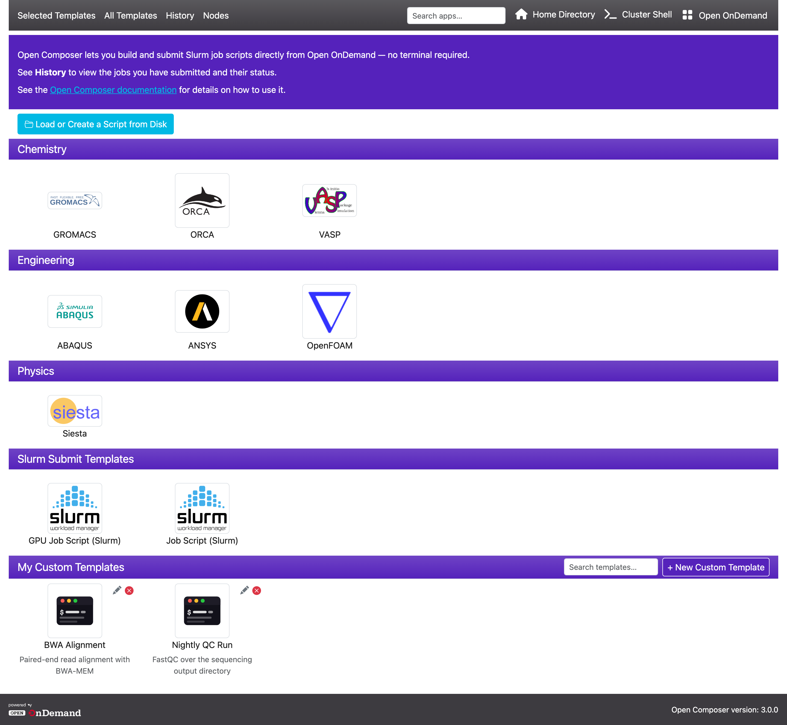
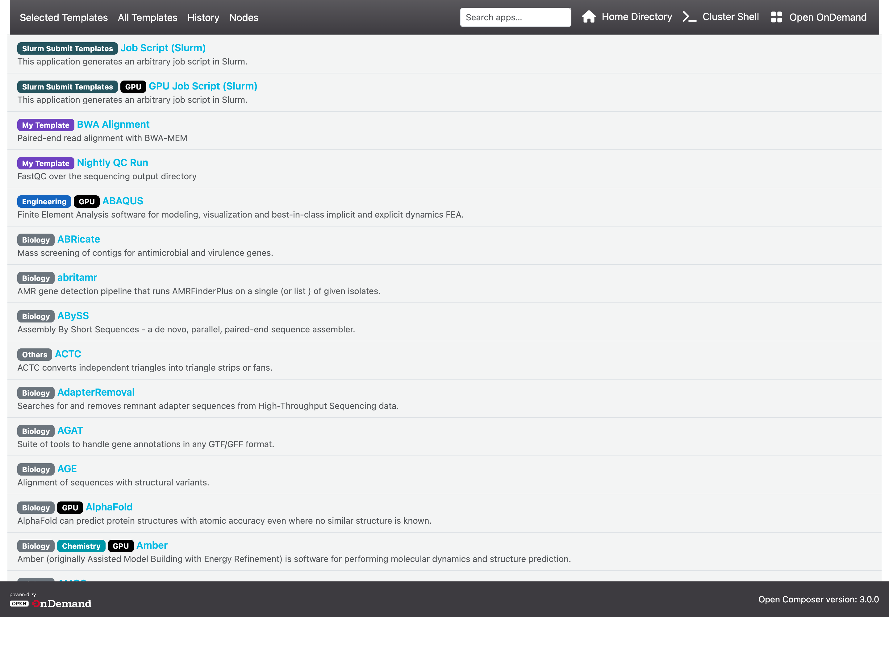
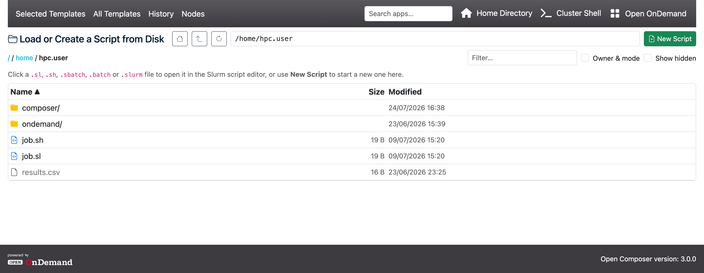
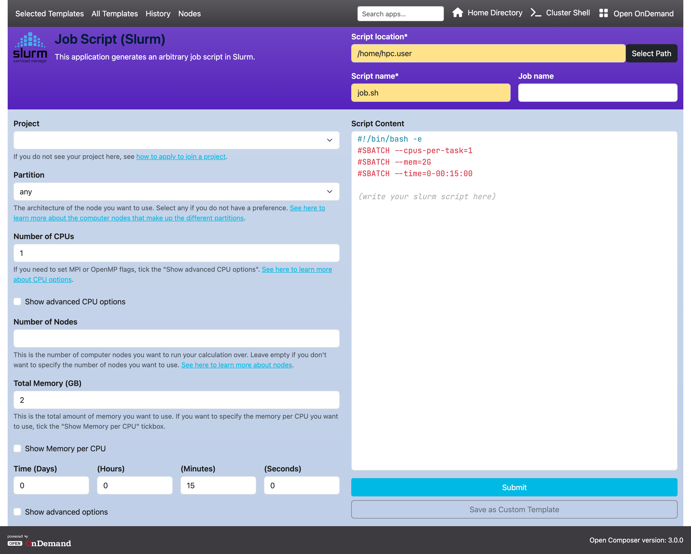
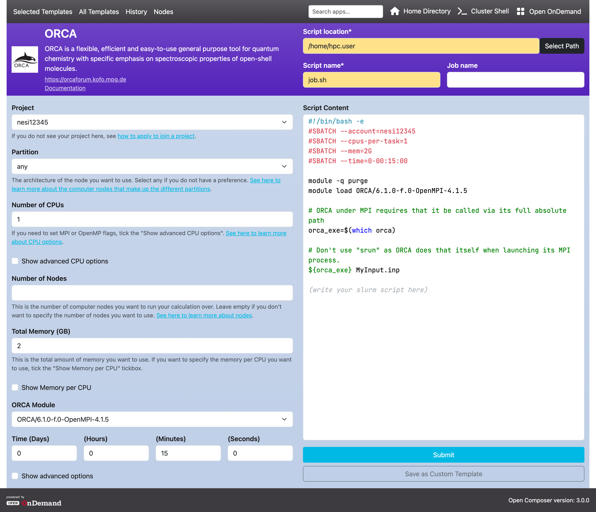
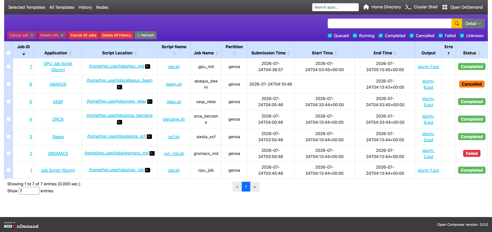
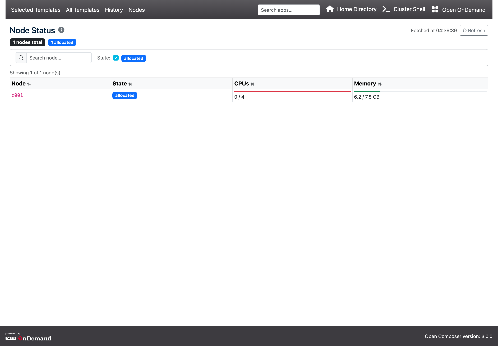

Open Composer User Manual
1. Introduction
Open Composer is a web application to submit batch jobs to an HPC cluster system from a web browser. It consists of the home page ("Selected Templates"), the "All Templates" page, the "Load or Create a Script from Disk" file browser, an application page for each template, the "History" page, and the "Nodes" page.
2. Home Page
Displays application icons by category.
The home page layout can be configured by the administrator via the home_format setting in conf.yml.erb.
The big format (default) shows large tiles with the application icon and name; the small format shows compact list-style entries.
The navigation bar contains the following links:
- Left side — four links, one per page:
- Selected Templates — the home page you are on: the applications your site has chosen to show, grouped by category, followed by your own saved templates.
- All Templates — a single scrolling list of every template, including applications that are not shown on the home page. See 3. All Templates Page.
- History — your job history. See 6. History Page.
- Nodes — the current state of the cluster's compute nodes. See 7. Nodes Page.
- Search box — on the right-hand side of the navigation bar, before the remaining links.
- It searches every application (including those hidden from the home page) and your own saved templates. A match is a case-insensitive substring of the name, of any of its categories, or of its description.
- Matches are listed directly below the navigation bar, with the same category and GPU badges used on the All Templates page; your saved templates are tagged
My Template. Click an entry to open it. - While the box has text in it, the list of templates on the page is hidden, so the results take its place. Clear the box to bring the page's own list back.
- The box is absent if your administrator has set
show_search: falseinconf.yml.erb.
- Right side:
- Home Directory — opens the Open OnDemand file browser. Hidden if
show_home_directory: falseinconf.yml.erb. - Shell Access — opens an Open OnDemand shell session on a login node. It is always a single link, never a dropdown, and it connects to the login node configured for the cluster the current page is using: the cluster selected on the History or Nodes page, or in an application page's "Cluster name" field, and otherwise the first cluster in the configuration. Hidden if
show_shell_access: false. The label and icon are set viashell_access_labelandshell_access_icon, so your site may have renamed it. - Open OnDemand — a link back to the OOD dashboard. Hidden if
show_open_ondemand: false. The label is set viaopen_ondemand_label; the URL defaults to the dashboard on the same host and only needsopen_ondemand_urlif your dashboard lives elsewhere.
- Home Directory — opens the Open OnDemand file browser. Hidden if

2.1. My Custom Templates
The "My Custom Templates" section appears below the application categories. It shows your saved templates as thumbnails, using the same icon as the application the template was created from.
- Click a template thumbnail to open its source application page with all form values pre-filled.
- Click the + New Custom Template button in the section header to open the "New Custom Template — Choose a Style" picker page, where you can select any available application as the starting point for your new template.
- Click the pencil icon on a template to rename it or update its description without leaving the home page.
- Click the × icon on a template to delete it (a confirmation prompt will appear).
Templates are stored per-user under data_dir/templates/.
If no templates have been saved yet, the section displays a short hint explaining how to create one.
Once you have saved at least one template, a "Search templates…" box appears in the section header. It filters the tiles by template name and description as you type, and reports "No templates match your search." when nothing matches. It only affects this section; the search box in the navigation bar covers everything.
You can also reorder the tiles by dragging one and dropping it where you want it. The new order is saved automatically and is used every time the section is shown. A few points are worth knowing:
- Dragging is disabled while the section's search box has text in it. Clear the box first, then reorder.
- Press Esc, or drop the tile outside the grid, to cancel the move. The previous order is restored.
- If a drag leaves the order unchanged, nothing is saved.
- If saving fails (for example because your session has expired), the previous order is restored and a message asks you to reload the page and try again.
- Templates you have never dragged sort after the ones you have positioned, in alphabetical order. A template you have just saved therefore appears at the end of the section until you drag it somewhere.
3. All Templates Page
The All Templates link in the navigation bar shows every template as one full-height scrolling list instead of icon tiles. Because the list is not filtered, this is the place to look for something you cannot find on the home page: it also includes applications that your site has marked as hidden, which never appear in the home page categories.

The list is in three groups, in this order:
- The site's featured job-script templates — the applications in the category your administrator has featured.
- Your own saved custom templates.
- Every other application, in alphabetical order by name.
Each row shows the template name with its description underneath, preceded by badges:
- One badge per category the application belongs to. The colour is chosen per category by your administrator; categories with no colour set use grey.
- A black
GPUbadge on applications that are GPU applications. - A purple
My Templatebadge on your own saved templates.
Click a row to open that application's page. Clicking one of your own templates opens its application page with your saved values already filled in. Typing in the navigation bar's search box replaces this list with the matching entries. Your site may show a short note along the bottom of the page.
4. Load or Create a Script from Disk
If you already have a job script on the cluster, you can open it in Open Composer instead of rebuilding it in a form.
The "Load or Create a Script from Disk" button is at the top of the home page, above the application categories,
and again at the top of the "New Custom Template — Choose a Style" page.
Its label can be changed by your administrator (load_script_label), and the button is absent if show_load_script: false is set.

The button opens a full-page file browser, starting in your home directory. Its controls are:
- Buttons to go to your home directory, to the parent directory, and to reload the current directory.
- A path box: type a directory path and press Enter to jump to it.
- A breadcrumb trail of the current path; click any part of it to go there.
- A Filter box that narrows the listing to names containing what you type.
- An Owner & mode checkbox that adds two more columns, and a Show hidden checkbox that includes names beginning with a dot.
- Sortable Name, Size, Modified and Owner column headings; click the active heading again to reverse the order. Directories always sort before files.
The directory you are in is kept in the page's address, so the browser's Back and Forward buttons walk through the directories you have visited, and reloading keeps you where you were.
- Click a directory row to open it.
- Files ending in
.sl,.sh,.sbatch,.batch,.slurmor.bashcan be opened. - Any other file is listed greyed out and cannot be clicked.
- Clicking a script reads it from disk and opens it in the generic job-script page, with the file's contents in the script editor and "Script location" and "Script name" filled in from the file's path. From there you can edit the script, change form fields, and submit it.
- Only the first 1 MB of a file is read. For anything larger, a warning says the file was truncated, and the truncated text is what gets loaded — so do not submit it as-is.
The green New Script button starts a new script instead of opening an existing one. It opens a list of every application — hidden ones included, with the featured templates at the top — and the directory you were browsing is carried across, so the application page you choose opens with its "Script location" already set to that directory.
5. Application Page
Generates a job script. When you enter values in the web form on the left side of the page, a job script is dynamically generated in the text area on the right side of the page. The text area can be freely edited. When you click the "Submit" button below the text area, the generated job script is submitted to an HPC cluster system.

- The "Script location," "Script name," and "Job name" in the header section specify the "Directory where the job script is stored," "Name of the job script file," and "Job name," respectively.
- The "Cluster name" in the header section is only displayed if multiple job schedulers are configured. The job script will be submitted to the selected cluster.
- An asterisk next to the label of a web form indicates that it is a required field.
- If you manually edit the job script and then change a form field, only the lines corresponding to that field are updated in the script — the rest of your manual edits are preserved.
Applications provided by your site can be more elaborate than the generic form above. The example below shows a quantum chemistry application whose form pulls the available software versions from the cluster's module system, so the dropdowns only ever offer versions that are actually installed:

5.1. Submitting
Clicking Submit sends the job script to the cluster and takes you to the History page, where the new job appears at the top of the table. Two things can happen first, depending on how your site has configured Open Composer:
-
A warning that the script has no commands.
If the script contains nothing but blank lines, comments, scheduler directives and
modulelines, a dialog asks you to confirm before submitting. This usually means a form field that was meant to add the command to the script is still empty. You can submit anyway — the job will run and do nothing. -
An SSH key being set up for you.
At sites that submit jobs over SSH to a login node, the first submission may generate a passphrase-less SSH key in your
~/.sshdirectory and authorise it, so the job can be submitted without a password prompt. This happens once and is silent; an SSH key you already have is never replaced.
5.2. Save as Custom Template
The "Save as Custom Template" button appears in the left panel of every application page. Clicking it opens a dialog where you can give the template a name and an optional description. The current form values, together with the application's icon and path, are saved as a reusable template.
- Saved templates appear in the "My Custom Templates" section on the home page.
- When you open a template and then modify its values, the button changes to "Save". Clicking "Save" overwrites the existing template with the updated values — no dialog is shown.
5.3. Template Mode
When you open an application page from the + New Custom Template picker — or from "Load or Create a Script from Disk" and "New Script" started from that picker — the page opens in template mode. The page is then for building a template, not for running a job, so:
- The Submit (or Confirm) button below the script is not shown. This is expected; nothing has gone wrong.
- Save as Custom Template becomes the main blue button at the bottom of the panel instead of an outlined secondary button.
To run the job, save the template first. Saving returns you to the home page, where your new template appears in "My Custom Templates". Open it from there (or from the All Templates page) and the same form reopens with your values and with the Submit button available. If you did not want a template at all, reach the application from the home page categories or from the All Templates page instead of the picker; those routes open the ordinary application page with Submit in place.
6. History Page
You can browse the job history. You can also check the status of jobs and cancel running jobs. The page consists of four sections: Filter, Jobs, Actions and Display.

6.1. What the Table Contains
The table lists every job the scheduler reports for your user account — not only the jobs you submitted through Open Composer. Open Composer stores its own record of the jobs it submitted (application, script location, script name, and the script itself) and joins that onto the scheduler's data. Rows for jobs submitted some other way, for example from a terminal, therefore look different:
- The "Application" column is empty and has no link.
- The "Script Location" column is empty, so there are no file-browser or terminal icons.
- The "Script Name" column shows the word Job instead of a file name. Clicking it still works: the batch script is fetched from the scheduler when the dialog opens.
- Job ID, Job Name, start and end times, output and error files, and Status come from the scheduler, so they are filled in for every job.
6.2. How Far Back the Page Looks
By default the page asks the scheduler for a seven-day window: today and the six days before it. Jobs older than that are not listed until you widen the range. Queued and running jobs are always included, whatever their date.
The Range menu under the "Detail" button changes the window:
- (ALL) — applies no date filter, but does not widen the seven-day query window either, so in practice it lists the same jobs as "Last 7 days".
- Today — today only.
- Yesterday and Today — yesterday and today.
- Last 7 days — today and the six days before it, the same window used by default.
- Last 30 days — today and the 29 days before it.
- Custom — enter "From" and "To" dates yourself. This is the only way to see jobs older than 30 days.
6.3. The Four Sections
- Filter
- This section allows you to filter job history and search for specific jobs.
- Enter text in the input field and press Enter to display only the jobs that match the input in the table.
- Click the "Detail" button to perform more advanced searches such as AND/OR conditions, filtering by specific fields, and specifying a time range.

- You can filter jobs by their status using the checkboxes: "Queued", "Running", "Completed", "Cancelled", "Failed", and "Unknown".
- If multiple job schedulers are configured, radio buttons will appear below the status checkboxes. You can select a scheduler to display only its jobs (e.g., "Fugaku" and "Prepost"; labels depend on configuration).
- Jobs
- This section displays the list of jobs.
- Click ▲ or ▼ in the table header to sort the entire table in ascending or descending order using that column as the key. The default order is descending by Job ID.
- Click the "Job ID" link to open the Job Details dialog. The details are fetched from the scheduler at the moment you open the dialog, so they are current rather than a stored copy.
- For a job that has finished (Completed, Cancelled or Failed) the accounting record is shown: fields such as JobID, JobName, Partition, State, Submit, Start, End, Elapsed, WorkDir, Account, TotalCPU, AllocCPUS, ReqMem, ExitCode, NodeList, and the standard output and error paths. Which of these appear depends on what your site's scheduler reports.
- For a queued or running job the scheduler's live record is shown instead, which is a much longer list of settings. This is why the field names differ between an active and a finished job.
- The Source line at the bottom of the dialog is a disclosure. Click it to see the exact command Open Composer ran, which you can run yourself in a terminal.
- For finished jobs, a Job Efficiency table is shown below the details, if your site has enabled it. It reports Wall Time, CPU and Memory, each as a percentage followed by the figures it was calculated from; GPU jobs also get GPU Utilisation and GPU Memory.
- Reading the percentages: CPU compares the CPU time your job actually used against the cores it reserved for the time it ran, Memory compares peak usage against the memory you requested, and Wall Time compares the run time against your time limit. A low percentage means you asked for more than the job needed. Reducing the request next time does not slow the job down and usually means it starts sooner.
- Click the "Application" link to open the corresponding application page. If an icon is shown next to the application name, clicking it will open the Open OnDemand application page directly.
- Click the "Script Location" link to open the Open OnDemand Home Directory. Clicking the terminal icon will launch the Terminal application.
- Click the "Script Name" link to view the job script that was executed. Clicking "Load script" in that dialog opens an application page with the job's script and all the parameters used for it preloaded, so you can adjust and resubmit it.
- Actions
- This section allows you to perform operations on jobs.
- Select jobs using the checkboxes on the left side of the table, then use one of the per-selection actions:
- Cancel Job — cancels the selected queued or running jobs. Only the selected jobs that are Queued or Running are counted, and the number on the button shows how many.
- Delete Info — hides the selected finished jobs from the table and discards the information Open Composer stored about them. The jobs themselves are untouched, but the rows do not come back, so this cannot be undone. Queued and running jobs cannot be deleted: they are left out of the button's count, and the dialog warns you how many of your selected jobs were excluded and asks you to cancel them first.
- Cancel All Jobs — cancels every queued and running job found in the last 30 days. A confirmation dialog appears before any jobs are cancelled.
- Delete All History — hides every job from the last 30 days, in the same way as "Delete Info", and cannot be undone. It refuses to run while you still have queued or running jobs: a banner appears telling you how many are active and asking you to cancel them all first.
- Refresh — reloads the history page to pick up the latest job statuses.
- You can select multiple jobs and perform actions on them at once.
- Selecting the checkbox at the top of the table selects all jobs displayed on the current page.
- When cancelling multiple jobs, each job is cancelled individually. A progress bar inside the dialog tracks how many have been processed ("X / N"), and an Abort button stops after the job currently in flight. If all jobs are cancelled successfully, the bar turns green and the page reloads automatically. If any cancellations fail, each error is listed so you can see which jobs were not cancelled.
- Display
- This section controls how the job list is displayed, including the number of entries and pagination.
- At the bottom of the screen, the number of displayed entries, total entries, and the time taken to generate the table are shown.
- Enter a number in "Show entries" and press Enter to change the number of entries displayed per page.
- Click page numbers to navigate between pages.
- Depending on how your site is configured, the table may include extra columns: "Job Name", "Start Time", "End Time", "Output" and "Error", and possibly further raw scheduler fields. If a column you expect is missing, your administrator has not enabled it.
- In the "Output" and "Error" columns the file name is a link. Clicking it reads the file and shows it in a dialog without leaving the page. Only the first 1 MB of a large file is shown, with a notice saying so.
- On narrow screens all of these optional columns except "Job Name" are hidden. Widen the browser window to see them.
7. Nodes Page
The Nodes page shows the current status of the cluster's compute nodes. It is accessible via the "Nodes" link in the navigation bar. The data is read once, when the page loads; the page does not refresh itself.

- The row of badges above the table summarises the cluster: the total number of nodes, then a count for each state that is present — idle, allocated, mixed, down, drained and draining first, followed by any other states your site reports.
- The table shows each node's name, state, CPU usage and memory usage. CPUs and memory are drawn as bars labelled available / total; the bar changes colour as the node fills up.
- Additional columns are added automatically for every GRES (Generic Resource) type the
scheduler reports — for example
gpuornvme. Each GRES column is broken down by subtype (e.g.A100,H100) and shows available vs. total counts. These columns follow "Memory", in alphabetical order. - The search box is a plain substring match over the whole row: the node name, its state, its CPU counts, its memory figures, and the names of the GRES types it has — so typing
gpushows only GPU nodes. - Use the "State" checkboxes to show or hide nodes by their current state (e.g. idle, allocated, down). All are ticked to begin with, and only the states actually present on the cluster are offered.
- Click a column header to sort the table by that column; click again to reverse the order.
- "Showing N of M node(s)" above the table tells you how many rows the current search and state filters leave.
- "Fetched at" next to the Refresh button is the time the data was read from the cluster. Click Refresh to fetch it again.
- The information icon beside the "Node Status" heading opens a dialog showing the exact command the page is built from, so you can run it yourself in a terminal.
- If your site has more than one cluster, radio buttons appear next to Refresh. Choosing one reloads the page for that cluster.